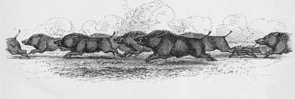

Hog Hunting In The East, And Other Sports | by J. T. Newall
The principal sport treated of is that of Hog-hunting. I have endeavoured, both by pen and pencil, to give to the uninitiated some general idea of this sport to my mind one of the most attractive in the world as I have enjoyed it in the countries indicated. This appears to me to be the simplest maimer of bringing together a number of anecdotes of sport occurring at widely-separated periods and places.
| Title | Hog Hunting In The East, And Other Sports |
| Author | J. T. Newall |
| Publisher | Tinsley Brothers |
| Year | 1867 |
| Copyright | 1867, Tinsley Brothers |
| Amazon | Hog Hunting in the East, and Other Sports |
By Captain J. T. New All, Author Of "The Eastern Hunters," "John Neville" Etc
With Illustrations
To Rugbeians, old and young, this chronicle of sport and adventure Is Dedicated, By An Old School-Boy.
 Preface
Preface- Some exception was taken to the introduction of fictitious, in place of real, names of places described by me in a former book of sport. Fully admitting the justice of the criticism on behalf of those...
- The Wild-Boar
- On his bow-back he hath a battle set Of bristly pikes, that ever threat his foes ; His eyes like glow-worms shine when he doth fret ; His snout digs sepulchres where'er he goes ; Being move...
- Chapter I. Introductory
- The wild-boar! There is something in the very name suggestive of fierce, impetuous courage, of dogged, obstinate determination, and sudden, brisk rapidity of action. At least, to my mind, the word see...
- Hog-hunting as a sport
- It is essentially a sport sui generis. With none other in the world is it capable of fair comparison. Since the time of the Erymanthean boar, wild-pig have formed an object of pursuit in many countrie...
- Its great merits. How pursued
- His aversion is not stronger than that felt by the hog-hunter towards the carnal-minded creature who would shoot a pig. In the high hills and great jungles, where spearing from horseback is entirel...
- Spears, sticks, and heads
- For the purpose in view, throughout the Bombay Presidency,* a bamboo stick, of from eight to ten feet long, is in common use. On the light and tapering end of this is attached a steel spear-head, whic...
- Poetry of sport
- I may be deemed by many unduly enthusiastic but, to me, field sports have ever been invested with a wild, undefined, inexplicable charm, which I can only express by the term poetry of sport.' The ha...
- Advantages of hunting journals
- As I have seen the sport, so I desire to represent it. But I warn my readers that possibly they will find it differ very considerably from some of those descriptions, by which they may have learnt to ...
- Chapter II. Cutch
- If the reader will be good enough to cast his eyes over a map of India and run them down its western coast, he will find that the north tropical line cuts a district on the seaboard, which, from the p...
- Description Of A Cutch
- The entire length of the province is about 200 miles, and its greatest breadth, exclusive of the Runn, 45 miles. Within its area is to be found a surface as varied as irregular. From the dead level of...
- Preparations for the meet
- Not many hours after the announcement of this important fact, strings of camels and carts of the strange, peculiar fashion common to that country, might have been observed wending their way out of the...
- The party-Eiding out to the meet
- Norman had managed to organise a very jovial and pleasant party of ten in number, including several strangers, who had come to that out-of-the-way province either for the sake of sport, or on duty, or...
- Nature of the country
- The road, for the first few miles, lay through ground tolerably open, but over which were scattered numerous sandy knolls, covered with low bush. These mounds, and, in many parts, the adjacent plains ...
- Old " Natta," the hunt shikaree. His appearance in clerical costume
- It was none less than Natta, the great Cutch shikaree. The renowned tracker whose experience had for a score of years and more assisted the sahib logue to find their game. Trained to his work under ...
- The lungra-wallah
- While he was undergoing a more critical inspection, Norman held brief discourse with him. Is the khubber good ? was the first inquiry. The khubber is good, sahib,' was the reply the one inv...
- " Goose's pup," and " Wilderness," two singular items in a bill of fare
- As joyous and merry-hearted a party of young men as ever buckled spur, sat down to dinner together that cold January evening. Parade-bugles, night-rounds, uniform, drill, and duns, had given place to ...
- Chapter III. A speech
- When dinner was over, and the nectar, such as is brewed by those rival benefactors of the thirsty Indian, Messrs. Bass and Allsopp, had given place to a brew of which Mackenzie was the able compound...
- A proposal chaffed but approved of
- Norman this time took no notice of the interruptions, for he wisely considered that nine to one were odds in a chaffing match with which it was useless to contend, so he continued rapidly: My prop...
- Bound the camp-fire
- The approbation was conveyed in the form of noise, which being contagious was joined in by Norman himself. The terriers and nondescripts belonging to the camp took up the chorus, and this was responde...
- Boar-rips. A ripping affair
- The second of the other party had been obliged to pull in as all this occurred, and now urged his horse at a slow pace towards the boar, who was standing at bay with champing tusks. As is often the ...
- A narrow squeak
- Well, your friend had certainly a narrow squeak for it, said Danvers. I remember an occasion, however, where the boar preferred attacking the horse to the man. I was one of a hunting party n...
- Horse ripped
- It is a long time ago, but I remember the whole scene as vividly as if it were but a year since. I was only a lad then, and was attached to a regiment at Ahmednuggur, and had just passed my drill, a...
- My first day's hunting
- The date grove so called from the numerous date trees was the place it was determined to beat in the first instance, as it was known to be full of pig; and towards this, accordingly, we all wended o...
- Anecdote of Mr. McGregor
- I soon got a chance, and made a vigorous thrust which, to my astonishment, missed ; for it seemed so easy a thing to spear a large object like a boar, that I hardly thought it possible. However, there...
- Chapter IV
- Stable management in India—The Eunn of Cutch—Morning costume —Khubber—Hair of the clog—Arrangements for the beat— Gone away—A run on the flat—The first kill—The second find—Chances of the chase—A l...
- Chapter IV. Part 2
- Looking straight in front, a few dwarf and stunted trees dotted the horizon, marking probably the position of the well-pits Natta had referred to as being in the bunnee. This is a tract of coarse r...
- Chapter IV. Part 3
- After a very brief discussion between Norman and one or two others, this plan was agreed to ; and while the beaters were acting on it, and forming into line so as to cover a space of, perhaps, a third...
- Chapter IV. Part 4
- A slight turn the pig now made to the right increased this chance, and some of those, the nearest on that side, who had been looking out for such an opportunity, now sent their horses along. Norman wa...
- Chapter IV. Part 5
- It is one of the small-toothed breed, sahib, the old shikaree quickly rejoined, in a somewhat deprecating manner, and then added, more triumphantly, Look, too, at the lean hind-quarters and the lo...
- Chapter IV. Part 6
- Before closing, Norman took a slight pull on his horse, for he thought he had time to manage the affair as he chose. With a touch of his spur he then let him go, and dashed suddenly up to the blown pi...
- Chapter V
- Cutting up the game—Natta's pet—Classification of pig according to appearance—The sailor's song—A scene in the Himalayas—The Guddees and their country—A single-handed affair with a bear —A turn up wit...
- Chapter V. Part 2
- No squeaker is nigh, To grow such fine tushes Or cock such an eye. You not leave thee, then, lone one, Life's hazards to stem; Since thy wives are all sleeping, Go, sleep thou with them. Th...
- Chapter V. Part 3
- I wish I could give you fellows an idea of the glorious scenery of that pass. All the lower slopes of the mountains, with a southern exposure towards Dhurmsala, were either bare spurs of the most vi...
- Chapter V. Part 4
- The order for the march was in consequence delayed, and I sallied forth with my well-tried old double gun and single rifle and a borrowed double rifle I also had with me. About a mile from the villa...
- Chapter V. Part 5
- Well, since bears, et hoc genus, haye taken the place of boars this evening at my request, said Mackenzie, I will relate, as my contribution to the night's entertainment, an affair with a bear in...
- Chapter V. Part 6
- Directly it saw us on the bank just above it, at us it came, and was knocked back with a volley. The nearest of our party was close upon it, and probably not more than three or four yards distant. I...
- Chapter VI
- The rival wash-hand stands—Esprit-de-Presidency—No khubber— Move to Dooree—En route—Native ideas on English customs— Tracking pig into the Runn—The run—A running fight—Its conclusion—The Dooree jungle...
- Chapter VI. Part 2
- Is it worth while trying 1 asked Norman. What do you say ? . Beaters are expensive, was the cautious reply. The sahib knows everything. If it be his pleasure to try, then, perhaps, as his n...
- Chapter VI. Part 3
- An hour's pugging had carried them well away from the mainland, and the pig, if started within a reasonable distance of the riders, could hardly fail to lose one of their number. Another hour only ren...
- Chapter VII
- Thrusting at the chest—A remarkable feat—An attempt to engage three bears with spear and pistol—A chance meeting—A solitary-boar chase—A happy thrust—The remarkable feat explained— The Kerai—A dash at...
- Chapter VII. Part 2
- I met the charge with a well-directed spear, and it entered between the neck and the shoulder. As I got out of the way I was unable to withdraw the weapon, and accordingly left it standing out in fr...
- Chapter VII. Part 3
- My shikarees had been for a few days after one or two very large boars which were roving about this neighbourhood, and sent into Bhooj one night to say if I came out on the following morning, they c...
- Chapter VII. Part 4
- : a I had with me a short, stout spear, leaded at the end, one I had specially made up for such an occasion as the present, where a decisive blow was required, and a stick strong enough to withstand a...
- Chapter VII. Part 5
- The villagers construct round some of their grain-fields tremendous hedges of dried-up wild bair bush, which they collect and pile up to a height and breadth rarely negotiable on horseback. This is ...
- Chapter VII. Part 6
- There is certainly nothing like riding on and not giving up a pig directly he is lost, remarked Mackenzie. There is always a chance of picking him up again ; and he rarely stops for any length of ...
- Chapter VIII
- A sharp spurt—Pig escapes wounded—A singular accident—Horse killed—Beating the Dooree jungle—Difficulty in getting pig to break—Gone away at last—A fast set-to—Speared and done for—The bags of the sho...
- Chapter VIII. Continued
- During the period consumed in slightly refreshing the inner man after the various contretemps attending the first run, and while Natta was getting together the men and making the arrangements for the ...
- Chapter IX
- A flying and a sitting snipe killed with one shot—Pot shots—Incidents in early life—Spearing a muggur—Hanging a muggur Hunting pig through deep water—A boar caught, bound, and released—Riding swimming...
- Chapter IX. Part 2
- You young rascals ought to have been flogged for taking such unfair advantages of poor snipes, said Stewart. I should certainly have confiscated that valuable fowling-piece with which you committe...
- Chapter IX. Part 3
- My regiment had just arrived at Ahmedabad, and there being a scarcity of houses in the regimental lines, my chum and myself took a very nice bungalow on the banks of the river, a quarter of a mile or...
- Chapter IX. Part 4
- They wanted us, of course, to slay the unfortunate beast then and there. One or two of the hunters proposed giving him a fair start in the open and riding him ; while one bloodthirsty fellow wished ...
- Chapter IX. Part 5
- I shirked the task of endeavouring to attain my object by swimming. Eventually the water ran out when the rain ceased as rapidly as it had risen, and most fortunately for me the political agent i...
- Chapter X
- The Dooree jungle blank—What is sauce for the goose is not sauce for the fowl—Beef or pork—A couple of sows found and accounted for — Sniping—A strange ailment—Orders for the march—A couple of lucky s...
- Chapter X. Part 2
- Melton had got away after the companion, which took nearly in the same direction, and the two rode off to join in the pursuit, if possible, or give such assistance as might be required. Directed by th...
- Chapter X. Part 3
- The day was a very tempestuous one. A heavy gale was roaring down the river from the wild gorges about Umb and the mountains above Derbund, where our camp lay during the winter of 1863-64, and fligh...
- Chapter X. Part 4
- I should mention that on the previous day I had beaten unsuccessfully the bed of a river and the range of hills above it, in the neighbourhood of Ruttunghur. I had on that occasion been accompanied,...
- Chapter X. Part 5
- * See Appendix, Note O. That was my first experience of the abundance of game at the place in question. My second was in the year following, when circumstances again took me there, but this time ...
- Chapter X. Part 6
- Our arrangements were soon completed. We climbed into our nest, and, after receiving our batteries, and being joined by my shikaree to act as a look-out, we sent all the men away towards the village...
- Chapter XI
- A discussion on the subject of spear and spearing—Pugging—The excellence of the Cutch puggees—A fine example—The boar found, run, and lost—The Station of Bhooj—A sporting subaltern's bungalow. Ther...
- Chapter XI. Part 2
- * See Appendix, Note A. The gully was soon reached, but the puggees had just completed ringing it, and found that, though the boar had paid it a visit during his early morning wanderings, he had pa...
- Chapter XI. Part 3
- But not for very long was this to continue. Soon the rocky and broken ground was reached, and the foot-print was frequently quite uncliscernible All the men had now to work, some sticking to the trail...
- Chapter XI. Part 4
- The boar was a heavy one, and had the ground been better adapted for riding, would have soon been run into. But seamed as it was with watercourses, and covered with stones which lay thick on the rough...
- Chapter XI. Part 5
- Highest on the rise, on a bare spur of the hill, are constructed the barracks for the European soldiers of the horse battery usually stationed there. Next in altitude come the bungalows of the officer...
- Chapter XI. Part 6
- On the other piece of table was laid a rifle and gun-case, with other sporting articles; and bags of shot and bullets, boxes of wads, and canisters of gunpowder rested beneath. Near this table stoo...
- Chapter XII
- A morning's hunting in the Charwa hills—A brace of bulls accounted for—A few Indian misnomers—An anecdote in point—A double shot at buck with a single rifle—Another similar incident— Killing a fightin...
- Chapter XII. Part 2
- It fell quite dead, and it was found that Mackenzie's last bullet had gone through its heart, or close to it. Besides this wound, the animal had a couple of bullet holes in its neck. The sportsmen ...
- Chapter XII. Part 3
- I was shooting with a valued old single-barrelled rifle, an excellent one for deer, so that I was unprovided with another barrel with which to salute him. But he seemed determined to give me every c...
- Chapter XII. Part 4
- Why, you talk of those articles as if they were something to eat, said Danvers. Remember, too, pig are fond of lying in cotton fields. Yes, but it is only when other cover is available at t...
- Chapter XII. Part 5
- The sport was not to be dependent on ourselves, so we had no guns, though many of us would rather have been actors than spectators. The principal shikar, however, was to be antelope hunting wit...
- Chapter XII. Part 6
- On the same cart with myself was a good-looking native gentleman, with whom I, being a stranger, was unacquainted. I found afterwards that he was a near relative of the Guicowar's, and went by the t...
- Chapter XIII
- Again on the trail—Found—A sharp struggle for the spear among the nullahs—Killed—The peculiarity of the pug accounted for-A run in the hills—Found and lost—A severe fall—Brought into camp—Amateur doct...
- Chapter XIII. Part 2
- Full Cry.—a Speedy Sow Among The Nullahs. As the river was approached, the surface of the country became still more broken by the ramifications of the various water channels, and the pig might ...
- Chapter XIII. Part 3
- To ride them in the nullah itself was there an impossibility ; but by galloping along the banks or the sides of the hills above, occasionally sighting them, they hoped to find a chance of forcing them...
- Chapter XIV
- A chapter of accidents—A compromise—Young antelope hunting A heavy fall and its consequences—Collision with a buffalo-Flying a donkey—Travelling by mail-cart in the Punjaub—An unlucky stage—Systems of...
- Chapter XIV. Part 2
- When I reached home, I was obliged to have my boot cut off, and it was a month before I could get about. I have had many a bad cropper since, but with one exception that was the worst I ever got. ...
- Chapter XIV. Part 3
- , Yes, and not alone in falls from horses, said Melton. I once got no less than two in one night out of the mail cart between Lahore and Mooltan, and was none the worse of them. You ducks are yet ...
- Chapter XIV. Part 4
- The driver was profuse in his assurances of the safety of his makeshift, and off, once more, we started along the straight, dusty, moon-lit road, cut from the jungle, and dreamily discernible far in ...
- Chapter XV
- Nangurcha—Pig marked down, but difficulty in procuring beaters— Reason why—Necessity of paying beaters personally—Canes as cover—A sharp half-mile—Temporary escape of the boar— Measures to dislodge hi...
- Chapter XV. Part 2
- Policy as well as justice demand that the Indian hunter, in whatever sport engaged, should satisfy him-self that the men have their due. To all young sportsmen, therefore, my earnest advice is, See to...
- Chapter XV. Part 3
- Crash the boar charged into a strip of jungle, and bore through it with almost undiminished speed. He might perhaps have taken a turn up or down it, had not his cover been at hand. Into it went the ho...
- Chapter XV. Part 4
- The hunters kept watch and ward around, screened by such shelter in the shape of trees or bushes as presented itself. For some time no deafening howl of extra power announced that the pig was viewe...
- Chapter XVI
- Discussion on the subject of the first spear when boars may be speared, lost, and refound—Necessity of being present at death —Cases in point—Division of tushes—Example—Spearing pig on foot—Seeking an...
- Chapter XVI. Part 2
- Mentioning Aliwan, recalls to my mind some circumstances connected with spearing pig on foot recently communicated to me by a brother officer. He told me that the jungle had now grown so much over t...
- Chapter XVI. Part 3
- ** Appendix, Note G. Yes, I should doubt any man being able to meet the onset of a charging boar of fair size and weight without being upset, said Melton. The very impetus of the beast even if ...
- Chapter XVI. Part 4
- The hills above Kassersai are exceedingly steep ; and although to some extent rideable, are very difficult to hunt over. Covered with rock and stone, and largely furnished with jungle, they will bea...
- Chapter XVII
- A minority decide on hunting—Among tlie castor-oil and cotton fields—Found, run, and killed in them—-Another find and kill—Eound the camp-fire-—The Mukundra Pass—An unexpected meeting with a tiger—A s...
- Part 2
- This sudden turn had let up Vivian. But Norman still held the lead after he had brought his horse round and once more got in the wake of the pig, now showing evident symptoms of distress. It reached t...
- Part 3
- At Narainpqora, about midway between Gogrone and Durree, I had bagged a couple of stag samber the evening before; and hearing game was plentiful also at the latter place, I went out on the afternoon...
- Part 4
- On another morning I had sallied forth in a different direction, with my gun this time loaded with ball. As luck would have it, an old bear obtruded himself on my notice at the distance of not more ...
- Part 5
- No ! I cannot say that I am personally acquainted with such; but I have no doubt samber would charge if brought to bay and carelessly approached, as a red deer might do. Antelopes are very vicious in...
- Chapter XVIII
- The Venotree jungle—In position—Indecision of pig—A sounder creates much, anxiety—A boar breaks—A racing set-to across the flat—First spear—A collision—At bay among the nullahs —The last charge—Nearly...
- Chapter XVIII. Part 2
- They passed between the two detachments of anxious, watchful hunters, to whom was thus presented a tempting opportunity of matching the speed of their horses with the flying cattle. Had it been late i...
- Chapter XVIII. Part 3
- Cut in between him and the jungle! he ejaculated, as the three set their horses going. He won't twig us for a bit if we ride well for his rear. They could have ridden so as to endeavour to i...
- Chapter XVIII. Part 4
- What on earth made you come up so close with me? asked Mowbray. You very nearly came to grief. Very nearly! Only just look at my nose, was the reply, as the individual addressed tenderly str...
- Chapter XIX
- A gallop after a boar through jow—Taking a boar flying—Diseased pig—A discussion about tushes—My last boar—The Vinjule jungle—Nearly shot on to a boar—Forced from the jungle— Killed—A long stern chase...
- Chapter XIX. Part 2
- The last boar I killed in Eajpootana had one of the most perfect lower tushes in shape and sharpness I ever saw. One of them formed an exact semicircle from root to point, the curve, of course, bein...
- Chapter XIX. Part 3
- I didn't think any of my companions could follow me over, even if that part of the hedge lay in their line, which it did not, for they were mostly heavy men and not particularly well mounted; so I h...
- Chapter XIX. Part 4
- After getting the thorns out of my face and washing off the blood, I solaced myself with a glass of beer and a bit of tiffin. But our sport was not yet over. A man told us that pig were often t...
- Chapter XIX. Part 5
- * Appendix, Note H. I was much applauded by the shikarees for sticking to and spearing the boar in such a thick cover, and they looked upon the colt as a paragon of horseflesh. The poor little be...
- Chapter XX
- The party return to cantonments—The bag, though moderate, considered satisfactory—Uncertainty attending the first spear—A hunt-meeting at mess—Discussion regarding rules—Length of spear—Indiscriminate...
- Chapter XX. Continued
- A long spear, Mowbray remarked, is often as dangerous to those about in a scrimmage as to the pig. It is so far less handy and manageable. But this, however, is a subject of less moment than t...
- The Hog-Hunter's Song
- I sing not of the arms of men, Their passions, hates, or fears, No sonnet this from lover's pen, Of woman's smiles or tears. On other themes my rhymes I string, And less ambitious soar, My ...
- Appendix
- Note A. Spears, Spearheads, And Sow-Killing The choice of a spearhead is, of course, to some extent a matter of taste and individual opinion. I have endeavoured to give an idea of the general requi...
- Appendix. Part 2
- Note D Old Natta has been once before introduced by me to the public, though not in clerical costume. He was a veritable character, and actually appeared in the cast-off clergyman's coat as desc...
- Appendix. Part 3
- Note I. Cutch Wild Donkeys This handsome animal is an inhabitant of the Runn; and the same or a similar species is found, I believe, in the desert between the mountains in the north-west of the Pun...
- Appendix. Part 4
- Note M. Death Of The Hoese This singular and deplorable accident occurred as described, to an officer of my own regiment. I was myself in the field at the time. If my memory serves me right, the sh...
- Appendix. Part 5
- Note S This and the following anecdote were related to me by my brother, Captain F. Newall, late H.M.'s 8th regiment of Foot, then in the Indian army, he himself being the actor in both. Note T....